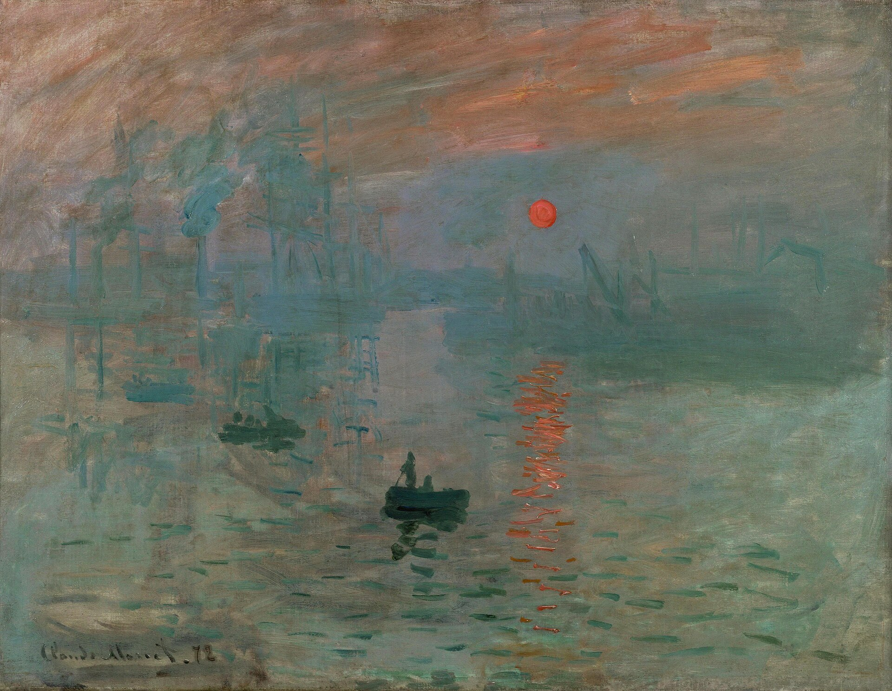

1. Pixelisation très grossière
Commence par quelques grands pixels, puis augmente fortement la définition à chaque palier.

Impression, soleil levant · pixelisation
Même image, quatre traitements retenus. Déplacez le curseur pour voir comment chaque méthode évolue au même palier.
Commence par quelques grands pixels, puis augmente fortement la définition à chaque palier.

Image complètement floue au départ ; le flou diminue régulièrement.
Les morceaux sont tous présents mais désordonnés ; seule une petite fraction se remet en place à chaque étape.
Une petite partie apparaît dès le premier palier, puis le dévoilement reste lent.